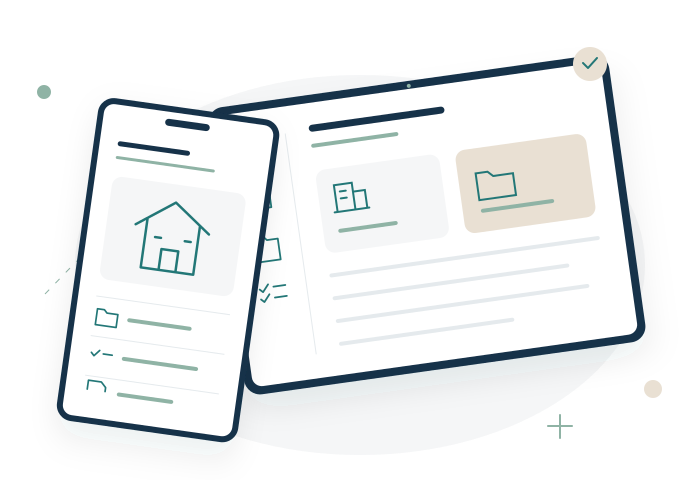

Den Bestand selbst verwalten.
Du möchtest Objekte, Mieter und Verträge selbst im Griff behalten. Mietblick verbindet die Informationen, damit du für eine Rückfrage die passende Akte zur Hand hast.
Bestand organisierenMIETBLICK · DIE VERMIETER-APP FÜR MAC
Immobilien, Mietverträge und Mietkonten.
Ein strukturierter Arbeitsplatz für deine Vermietung.
Mietblick verbindet deinen Bestand mit Verträgen, Zahlungen und Belegen. Nativ für den Mac, lokal gespeichert und auf den Alltag privater Vermieter ausgerichtet.
Die Informationen deiner Vermietung gehören zusammen. Mietblick hält diese Verbindung sichtbar – von der einzelnen Einheit bis zum zugeordneten Zahlungseingang.
Objekte, Wohnungen und weitere Einheiten erfassen. Mit Flächen, Ausstattung, Fotos und den zugehörigen Unterlagen.
Bestand organisieren 02 / MIETVERHÄLTNISVertragspartner, Laufzeiten und Mietbestandteile mit der passenden Einheit verbinden. Änderungen datiert festhalten.
Mietverträge verwalten 03 / MIETKONTOSollmiete und Eingänge nachvollziehen. Teilzahlungen, offene Beträge und noch nicht zugeordnetes Guthaben im Blick behalten.
Mietkonto führenMietblick ist eine native macOS-App für die konzentrierte Arbeit an deiner Vermietung. Dein Bestand wird lokal gespeichert – ohne eigenes Mietblick-Konto und ohne Mietblick-Server für deine Vermietungsdaten.
Mehr zu Daten & SicherungImmobilien, Verträge, Zahlungen und Kosten über die globale Suche auf dem Mac finden.
Originaldateien mit deinem Bestand verknüpfen, ansehen und bei Bedarf exportieren.
Rechnungen, Positionen und Objektanteile zusammenhalten. Korrekturen bleiben erklärbar.
Ob eine einzelne Wohnung oder mehrere Häuser: Mietblick bringt die täglichen Aufgaben privater Vermieter in eine klare Ordnung.
Du möchtest Objekte, Mieter und Verträge selbst im Griff behalten. Mietblick verbindet die Informationen, damit du für eine Rückfrage die passende Akte zur Hand hast.
Bestand organisierenDu möchtest wissen, welche Miete eingegangen ist und welcher Betrag offen bleibt. Mietkonten, Zahlungszuordnung und Rückstände geben dir einen nachvollziehbaren Überblick.
Mietkonten führenDu brauchst Unterlagen, Belege und offene Aufgaben am richtigen Ort. Mietblick hält sie beim Objekt zusammen – für die Arbeit am Mac und den Termin vor Ort.
Unterwegs arbeitenEin nachvollziehbarer Ablauf für die monatliche Kontrolle deiner Mietzahlungen.
Ratgeber lesen NEBENKOSTEN VORBEREITENMit einer strukturierten Vorbereitung und verlinkten rechtlichen Grundlagen.
Ratgeber lesenDer Mac ist dein zentraler Arbeitsplatz. Auf iPhone und iPad hast du Objektakten, Unterlagen und Aufgaben für deine Termine vor Ort zur Hand.
iPhone & iPad kennenlernen
Die passende Struktur für deinen Bestand beginnt mit einem klaren Überblick.
Kontakt aufnehmenFür private Vermieter, die eine Wohnung, ein Mehrfamilienhaus oder mehrere Objekte selbst verwalten. Immobilien, Mietverhältnisse, Mietkonten und Unterlagen bilden einen gemeinsamen Bestand.
Immobilien und Einheiten, Mietverträge, Mietkonten, Kosten, Dokumente und Aufgaben. Abrechnungen, Übergaben, Zählerstände und Auswertungen ergänzen deinen Bestand. Die Funktionsübersicht zeigt die einzelnen Bereiche und ihre Abläufe.
Dein App-Bestand wird lokal auf deinem Gerät gespeichert. Mietblick benötigt kein eigenes Benutzerkonto und betreibt keinen Mietblick-Server für deine Vermietungsdaten. Die App verzichtet auf Telemetrie.
Die Companion-Apps bringen Objektinformationen, Unterlagen und Aufgaben zum Termin mit. Fotos, Zählerstände und Übergaben erfasst du direkt vor Ort. Das iPhone eignet sich für den kurzen Blick, das iPad für Dokumente und ausführliche Objektakten. Mehr erfährst du auf der iPhone- und iPad-Übersicht.